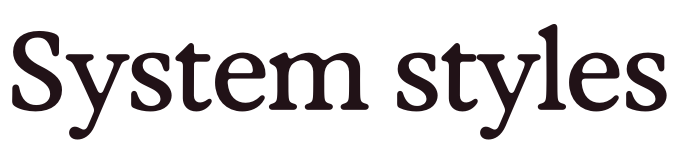

Buttons
To do
393 buttons across the shipped app, 91 of them wearing one of the 6 shared styles. Below: the styles, the controls that go their own way, and the ones that are not buttons at all.
The shared styles7 across 6 types
Every state below is rendered from the values parsed out of Styles/ButtonStyles/. A state that is missing from a row is missing from the style: two capsule styles have no disabled treatment, and the outline style has no loading treatment.
fillAccent · foregroundPrimaryInvertsurfaceTertiary · foregroundPrimaryfillAccent · foregroundPrimaryInvertfillAccent · foregroundPrimaryInvertfillPrimary · foregroundPrimaryfillPrimary · foregroundPrimaryColor(uiColor: UIColor.systemGroupedBackground) · foregroundPrimaryGeometry
The height a call site actually gets is the frame plus the padding outside it, which is why a 38pt minimum reads as a 50pt control.
| Style | Width | Shape | Height | Type | Colour |
|---|---|---|---|---|---|
| HeidiCapsuleButtonStyle | fits its label | Capsule | hugs the label padding 6pt / 12pt | .headlineSF Pro headline · 17pt semibold | fillAccenton foregroundPrimaryInvert |
| HeidiOutlineButtonStyle | full width | RoundedRectangle 14pt + 1pt border | 50pt (38pt + 6pt padding) padding 6pt / 6pt | .headlineSF Pro headline · 17pt semibold | surfaceTertiaryon foregroundPrimary |
| HeidiPrimaryButtonStyle | full width | RoundedRectangle 14pt | 50pt (38pt + 6pt padding) padding 6pt / 6pt | .headlineSF Pro headline · 17pt semibold | fillAccenton foregroundPrimaryInvert |
| HeidiPrimaryCapsuleButtonStyle | fits its label | Capsule | hugs the label padding 6pt / 12pt | .headlineSF Pro headline · 17pt semibold | fillAccenton foregroundPrimaryInvert |
| HeidiSecondaryButtonStyle · full widthfitContent: false (default) | full width | RoundedRectangle 14pt | 50pt (38pt + 6pt padding) padding 6pt / 6pt | .headlineSF Pro headline · 17pt semibold | fillPrimaryon foregroundPrimary |
| HeidiSecondaryButtonStyle · fit contentfitContent: true | fits its label | RoundedRectangle 12pt | 40pt padding 0pt / 14pt | .subheadline.weight(.semibold)SF Pro subheadline · 15pt semibold | fillPrimaryon foregroundPrimary |
| HeidiSecondaryCapsuleButtonStyle | fits its label | Capsule | hugs the label padding 6pt / 12pt | .headlineSF Pro headline · 17pt semibold | Color(uiColor: UIColor.systemGroupedBackground)on foregroundPrimary |
States
| Style | Pressed | Disabled | Loading | Shadow |
|---|---|---|---|---|
| HeidiCapsuleButtonStyle | fill ×0.8, scale 0.98, 0.1s ease-out | no disabled state | no loading state | none |
| HeidiOutlineButtonStyle | fill ×0.8, scale 0.98, 0.1s ease-out | opacityDisabled, opacityMuted | no loading state | .standard |
| HeidiPrimaryButtonStyle | fill ×0.8, scale 0.98, 0.1s ease-out | opacityDisabled | spinner tinted None, 8pt gap, label icon hidden | .standard |
| HeidiPrimaryCapsuleButtonStyle | fill ×0.8, scale 0.98, 0.1s ease-out | opacityDisabled | spinner tinted None, 8pt gap, label icon hidden | none |
| HeidiSecondaryButtonStyle · full width | fill ×0.8, scale 0.98, 0.1s ease-out | opacityDisabled | spinner tinted None, 8pt gap, label icon hidden | .standard |
| HeidiSecondaryButtonStyle · fit content | fill ×0.8, scale 0.98, 0.1s ease-out | opacityDisabled | spinner tinted None, small control size, label icon hidden | none |
| HeidiSecondaryCapsuleButtonStyle | fill ×0.8, scale 0.98, 0.1s ease-out | no disabled state | spinner tinted None, 8pt gap, label icon hidden | none |
Adoption
Direct initialiser versus the .heidi… shorthand. Both spellings are live, and only three of the six types have a shorthand at all.
| Style | Direct | Shorthand | Where |
|---|---|---|---|
| HeidiCapsuleButtonStyle | 2 | none defined | 2 filesApp/Features/SessionNote/Tabs/HHDocumentTabView.swift:173 Interfaces/Shared/ZeroStateView.swift:70 |
| HeidiOutlineButtonStyle | 1 | .heidiOutline unused | 1 filesInterfaces/Inbox/InboxReviewView.swift:353 |
| HeidiPrimaryButtonStyle | 48 | .heidiPrimary · 9.heidiPrimary(isLoading:) · 1 | 38 filesApp/Features/AppleMigration/AppleMigrationView.swift:71, 79 App/Features/ChronicleQuickstart/ChronicleQuickstartView.swift:205 App/Features/ChronicleSettings/ChronicleAlreadyPairedSheet.swift:44 App/Features/ChronicleSettings/ChronicleBluetoothPermissionSheet.swift:59, 136 App/Features/ChronicleSettings/ChronicleInitialPairingView.swift:119 App/Features/ChronicleSettings/ChronicleNotFoundSheet.swift:52 App/Features/ChronicleSettings/SetupSteps/ChronicleConnectedView.swift:75 App/Features/ChronicleSettings/SetupSteps/ChronicleSetupCompletionView.swift:114 App/Features/DefaultLanguageChooser/DefaultLanguageChooserView.swift:96 App/Features/DefaultTemplateChooser/DefaultTemplateChooserView.swift:95 App/Features/DeviceIntegrity/DeviceIntegrityBlockView.swift:51 App/Features/EMRIntegration/HHEMRIntegrationView.swift:61 App/Features/Evidence/ChatHistory/ChatHistoryView.swift:135, 153 App/Features/FirmwareUpdate/FirmwareAvailableSheet.swift:66 App/Features/FirmwareUpdate/FirmwareAvailableView.swift:100 App/Features/FirmwareUpdate/FirmwareCompletedView.swift:75 App/Features/FirmwareUpdate/FirmwareFailedView.swift:70 App/Features/HardwareUpgradeFlow/HardwareUpgradeFlowView.swift:79, 124, 159 App/Features/PatientChooser/HHPatientCreationView.swift:55 App/Features/Session/Consent/HHPatientConsentView.swift:59 App/Features/SessionNote/HHSessionDetailView.swift:969, 1154 App/Features/ShareNote/HHSendToPatientView.swift:210 App/Features/Telehealth/NumberVerification/TelehealthNumberVerificationAddScreen.swift:74 App/Features/Telehealth/NumberVerification/TelehealthNumberVerificationCodeScreen.swift:62 App/Features/Telehealth/NumberVerification/TelehealthNumberVerificationLoadFailedScreen.swift:27 App/Features/Telehealth/NumberVerification/TelehealthNumberVerificationManageScreen.swift:42 App/Features/Telehealth/NumberVerification/TelehealthNumberVerificationMethodScreen.swift:67 App/Features/Telehealth/NumberVerification/TelehealthNumberVerificationSuccessScreen.swift:30 App/Features/UnifiedLogin/UnifiedLoginView.swift:152, 366, 373, 380 Common/Components/HHConfirmationDialogView.swift:89 Interfaces/Inbox/InboxReviewView.swift:361 Interfaces/OnboardingCarousel/OnboardingCarousel.swift:111 Interfaces/RegionSetupView/RegionSetupView.swift:150 Interfaces/Shared/AccountSuspendedView.swift:66 Interfaces/Shared/UserFetchFailedView.swift:62 Interfaces/SplashScreen/SplashScreen.swift:123 Interfaces/UnlockUpsellView/UnlockUpsellView.swift:119, 138 Interfaces/WhatsNewRebranding/WhatsNewRebrandingView.swift:63 |
| HeidiPrimaryCapsuleButtonStyle | 6 | none defined | 6 filesApp/Features/Context/HHContextView.swift:212 App/Features/SessionMerge/HHSessionMergeOnboardingView.swift:130 App/Features/SessionNote/Merge/HHMergeConfirmSheet.swift:168 App/Features/SessionNote/Tabs/SessionMergeTab/HHSessionMergeDissolveSheet.swift:92 App/Features/SessionNote/Tabs/SessionMergeTab/HHUnmergeSessionSheet.swift:105 Common/Components/HHPromoSheet.swift:104 |
| HeidiSecondaryButtonStyle | 17 | .heidiSecondary · 2 | 16 filesApp/Features/ChronicleQuickstart/ChronicleQuickstartView.swift:215 App/Features/DefaultLanguageChooser/DefaultLanguageChooserView.swift:103 App/Features/Evidence/Components/HeidiCtaButtonView.swift:30 App/Features/FirmwareUpdate/FirmwareAvailableSheet.swift:71 App/Features/FirmwareUpdate/FirmwareAvailableView.swift:106 App/Features/FirmwareUpdate/FirmwareFailedView.swift:76 App/Features/SessionNote/HHSessionDetailView.swift:1072 App/Features/UnifiedLogin/UnifiedLoginView.swift:309, 436 Common/Components/HHConfirmationDialogView.swift:81 Interfaces/Inbox/InboxView.swift:153 Interfaces/Shared/AccountSuspendedView.swift:74 Interfaces/Shared/UserFetchFailedView.swift:74 Interfaces/SplashScreen/SplashScreen.swift:131 Interfaces/UnlockUpsellView/UnlockUpsellView.swift:128 Interfaces/WorkChat/WorkChatListView.swift:146 Interfaces/WorkChat/WorkChatView.swift:495 |
| HeidiSecondaryCapsuleButtonStyle | 4 | none defined | 4 filesApp/Features/SessionNote/Merge/HHMergeConfirmSheet.swift:177 App/Features/SessionNote/Tabs/SessionMergeTab/HHSessionMergeDissolveSheet.swift:102 App/Features/SessionNote/Tabs/TranscriptContentView.swift:209 Common/Components/HHPromoSheet.swift:115 |
Values that are not tokens
Repeated literals, and the token that already holds the same value where one exists.
| Value | Styles | Note |
|---|---|---|
| 0.8pressed fill opacity | HeidiCapsuleButtonStyle, HeidiOutlineButtonStyle, HeidiPrimaryButtonStyle, HeidiPrimaryCapsuleButtonStyle, HeidiSecondaryButtonStyle · full width, HeidiSecondaryButtonStyle · fit content, HeidiSecondaryCapsuleButtonStyle | no HHSizing token for it |
| 0.98pressed scale | HeidiCapsuleButtonStyle, HeidiOutlineButtonStyle, HeidiPrimaryButtonStyle, HeidiPrimaryCapsuleButtonStyle, HeidiSecondaryButtonStyle · full width, HeidiSecondaryButtonStyle · fit content, HeidiSecondaryCapsuleButtonStyle | not a token family |
| 0.1press animation | HeidiCapsuleButtonStyle, HeidiOutlineButtonStyle, HeidiPrimaryButtonStyle, HeidiPrimaryCapsuleButtonStyle, HeidiSecondaryButtonStyle · full width, HeidiSecondaryButtonStyle · fit content, HeidiSecondaryCapsuleButtonStyle | not a token family |
| 6padding | HeidiCapsuleButtonStyle, HeidiOutlineButtonStyle, HeidiPrimaryButtonStyle, HeidiPrimaryCapsuleButtonStyle, HeidiSecondaryButtonStyle · full width, HeidiSecondaryCapsuleButtonStyle | HHSpacing.space1_5 is the same 6pt |
| 38min height | HeidiOutlineButtonStyle, HeidiPrimaryButtonStyle, HeidiSecondaryButtonStyle · full width | HHSizing.buttonHeightS is 40pt; 38 is not a token |
| 14corner radius | HeidiOutlineButtonStyle, HeidiPrimaryButtonStyle, HeidiSecondaryButtonStyle · full width | HHRadius has no 14 |
| 0.5minimum scale factor | HeidiOutlineButtonStyle, HeidiPrimaryButtonStyle, HeidiPrimaryCapsuleButtonStyle, HeidiSecondaryButtonStyle · full width, HeidiSecondaryCapsuleButtonStyle | typography, not geometry |
| 8spinner gap | HeidiPrimaryButtonStyle, HeidiPrimaryCapsuleButtonStyle, HeidiSecondaryButtonStyle · full width, HeidiSecondaryCapsuleButtonStyle | HHSpacing.space2 is the same 8pt |
| .headline, .subheadline.weight(.semibold)type | every style | Apple text styles, not HHFont — the button label is the one piece of type in the app that does not come from the type ramp |
Built by hand55
Controls that carry their own chrome instead of a shared style. Line numbers are resolved at build time from a symbol that has to still exist, so this table cannot drift from the source it describes.
| Control | Chrome | States | Not tokens |
|---|---|---|---|
| Recording | |||
Record / stop orbHHSessionView.swift:790 | 100pt Circle with the state icon knocked out of the fill; .onTapGesture, not a Button | ready · recording · paused · stopped; dimmed to opacityDisabled while a lifecycle transition is in flight | 100 circle, 46 / 36 icon, 0.5s duplicate-tap throttle |
Resume overlayHHSessionView.swift:685 | second 100pt circle, stroked, sliding out from under the orb; tap gesture | shown only while showingResumeOption; hit-testing gated separately from visibility | 100 circle, 46 icon, ±70 offset |
Pause controlHHSessionView.swift:751 | Button, rounded rectangle, hand-built shadow | hidden but still laid out when not recording; disabled with the orb | radius 12, width 120, shadow .black.opacity(0.05) r1 y1 |
File-upload orbHHSessionView.swift:871 | 100pt filled Circle, icon knocked out; tap gesture with .isButton added by hand | single state | 100 circle, 46 icon |
Session settingsHHSessionView.swift:1120 | BackgroundPlatter chrome, @ScaledMetric 44 height | none | Color.primary tint |
Dictation cleanup modeHHSessionView.swift:1137 | a Menu dressed as the settings button above | none | chevron at size: 12 |
Session dismissHHSessionDismissButton.swift:13 | bare chevron Image in the toolbar — no frame, no background | none | — |
Patient name / renameHHPatientTitleView.swift:10 | Button, .plain | titled · untitled | @ScaledMetric pencil size |
Voice dictation micVoiceDictationButton.swift:27 | 40pt rounded square, hairline border, no shared style | idle · recording · transcribing (spinner, disabled) | icon 16, border 1 |
| Evidence | |||
Submit / stopEvidenceView.swift:2719 | one Button doing two jobs, fill swaps with intent | submit · stop · disabled | icon size: 16 |
Attachment addEvidenceView.swift:2813 | 40pt square, fillSecondary, HHRadius.lg | none | icon size: 18 |
ShortcutsEvidenceView.swift:2834 | same chrome as the add button | disabled dims the label | opacity(0.4) rather than the token |
SourcesEvidenceView.swift:2857 | same chrome, icon + label | none | — |
Collapsed input pillEvidenceView.swift:2472 | whole pill re-expands the composer; .onTapGesture with .isButton, wrapping a real stop Button | awaiting response · idle | toolbar button size 40, icon 16 |
Chat history / new chatEvidenceView.swift:739 | toolbar icons, no style, no frame | none | Layout.iconFontMedium = 16 |
Scroll to latestEvidenceScrollToLatestButton.swift:10 | 40pt visual, minTapTarget hit area — deliberately different sizes | none | shadowOpacity 0.14 |
Response footer (thumbs, copy, share)EvidenceResponseFooterView.swift:13 | 44pt icon buttons, .plain | thumb selected swaps the glyph and the foreground role | tap target 44 |
Citation pillCitationAttachment.swift:17 | RoundedRectangle at HHRadius.md, no border; not a Button at all — taps arrive as citation://N links | web · user document · +N count | caption 12, icon 12, radius 8 |
Mini playerEvidenceMiniPlayerBar.swift:14 | Capsule specced in Figma pixels | live volume bars | 83 × 25, bars 8 / 12 / 3 / 2 |
Image attachment removeEvidenceAttachmentChip.swift:47 | circular badge over the thumbnail | uploading overlay | 88 tile, 22 badge, 10 glyph |
Inline CTA — <heidi-button>HeidiCtaButtonView.swift:13 | the shared fit-content secondary style — the one bespoke-looking control that is not bespoke | inherits the style's states | — |
| Work chat | |||
SendWorkChatComposer.swift:280 | 40pt square, fill swaps on enablement | enabled · disabled | — |
Collapsed composer pillWorkChatComposer.swift:141 | tap gesture with .isButton; a copy of Evidence's, deliberately not shared | editable · locked | editor max height 250 |
Toolbar / slash / sources stubsWorkChatComposer.swift:400 | three buttons wired to an empty closure — visible chrome only | permanently disabled at opacityDisabled | — |
Scroll to latestWorkChatScrollToLatestButton.swift:12 | twin of the Evidence one, plus an unread badge | new content · action needed | shadowOpacity 0.14 |
Approve / denyResolutionBar.swift:13 | filled pill for the affirmative verdict, ghost text for deny | pending · resolving · resolved | — |
Clarification option rowWorkChatClarificationCard.swift:236 | selectable row, badge + fill swap | selected · multi-select checkbox | — |
| Sessions, home and templates | |||
Start sessionStartSessionButton.swift:10 | system .borderedProminent with a Heidi tint painted on | system pressed only | minHeight: 34 |
Compact session FABHHSessionListView.swift:845 | circular FAB, fully tokenised | none | no call sites — kept for a future tab bar |
Session rowHHSessionRowView.swift:12 | row is a shape with contentShape; the caller attaches the tap | avatar tap links a patient, error glyph retries the upload | icon 20 × 20 |
Appointment rowHHAppointmentRowView.swift:13 | row tap gesture | in-flight swaps in a bare ProgressView | vertical padding 4 |
Sync status actionsHHSyncStatusView.swift:88 | two inline buttons that a comment says match each other | success · error | they do not match: space2/space1/sm against space4/space2/md |
Search closeHHSessionSearchView.swift:165 | 56pt circle on the shared promptGlassBackground material | none | — |
Home header clusterHomeHeaderView.swift:113 | capsule and circles on the glass material | none | — |
Template buttonHHTemplateButtonView.swift:14 | BackgroundPlatter chrome; two near-identical private builders | loading spinner in one builder only | spacing 6, icons 18 / 12, insets 10 / 16, height 44 |
Background platterBackgroundPlatter.swift:10 | the shared chrome under the template and settings buttons | none | default radius 12, border 1 |
| Settings and account | |||
Settings rowsSettingsView.swift:322 | every row hand-wraps its own Button + .plain around SettingsRow | selection via a trailing checkmark | — |
Chronicle device rowSettingsView.swift:282 | the one settings row built on .onTapGesture instead of a Button | status icon | — |
Delete accountSettingsView.swift:866 | destructive by foreground colour only — no role | none | — |
Log out / log out everywhereSettingsView.swift:893 | Button(role: .destructive), label swaps for a spinner | loading | .tint(.gray) |
Delete account confirmAccountDeleteView.swift:64 | row-background colour carries the destructive intent, not the button | invalid · valid · loading | .tint(.gray) spinner |
ToggleHeidiToggle.swift:12 | a UISwitch in a UIViewRepresentable, tinted with fillAccent | the label row carries a second, hidden tap surface over the switch | — |
Workspace rowWorkspacePickerView.swift:58 | row button, .plain | selected shows a checkmark rather than a fill | — |
| Auth and onboarding | |||
Continue with email / socialUnifiedLoginView.swift:300 | shared primary and secondary styles — the best-behaved screen in the app | loading · disabled | "apple.logo" as a string literal |
Sign in (signed-out state)SignedOutZeroState.swift:11 | BorderedProminentButtonStyle() — the same system style as .borderedProminent, spelled differently | system | — |
Specialty retryRegionSetupView.swift:186 | three states rendered as three different rows | loading · error retry · normal | "arrow.clockwise" as a string literal |
Connect laterChronicleBluetoothPermissionSheet.swift:32 | ghost text button under a shared primary — no style, just a tap target | none | minHeight: 44 |
Carousel call to actionOnboardingCarousel.swift:39 | shared primary style; label changes per page | — | — |
| Chrome, widgets and UIKit | |||
Close toolbar itemCloseToolbarItem.swift:5 | the closest thing to a shared dismiss: role: .close on iOS 26, role: .cancel + xmark below | none | — |
Circle dismissDismissButton.swift:10 | 40pt filled circle with a chevron | none | no call sites; 40, 18 |
Upload status indicatorUploadStatusIndicator.swift:10 | icon with a tap gesture | needs upload · failed | no call sites; icon 24 |
Dial pad keyPhoneDialPad.swift:216 | the only ButtonStyle outside the folder, private to one view | disabled only — no pressed state at all | — |
Live Activity transportRecordingViews.swift:247 | Button(intent:) App Intents — pause, resume, end | compact variant for the Dynamic Island | height 32 / 44 |
Toast actionToastView.swift:10 | UIKit UIButton plus a tap recogniser on the whole card | four toast styles recolour the title | insets 16 / 12, icon 16, shadow 0.2 / 10, .white title |
QR scanner cancelCibaQRCodeScannerView.swift:131 | UIKit UIButton over the camera preview | none | black.withAlphaComponent(0.5), radius 8, height 44, width ≥ 88 |

System styles115Apple's own button styles, applied directly. .plain is usually deliberate: it strips chrome from a row or a card that is doing its own drawing. The bordered family is not: it puts Apple's button on a Heidi screen.
| Style | Count | What it is | Where |
|---|---|---|---|
| .plain | 107 | no chrome at all — the label is the button | 61 filesApp/Features/BinaryFeedback/HHBinaryFeedbackView.swift:177 App/Features/ChronicleBulkSync/ChronicleBulkSyncBanner.swift:64 App/Features/ChronicleSettings/ChronicleDetailView.swift:399 App/Features/ChronicleSettings/SetupSteps/ChronicleDeviceListView.swift:88 App/Features/DefaultLanguageChooser/DefaultLanguageChooserView.swift:175 App/Features/DefaultTemplateChooser/DefaultTemplateChooserView.swift:187 App/Features/EMRIntegration/HHEMRIntegrationView.swift:159, 364, 412 App/Features/Evidence/Components/CalculatorBubble.swift:186 App/Features/Evidence/Components/CollectionContentsView.swift:192 App/Features/Evidence/Components/EvidenceMiniPlayerBar.swift:59 App/Features/Evidence/Components/EvidenceProtocolsPickerView.swift:235 App/Features/Evidence/Components/EvidenceResponseFooterView.swift:82, 96, 113, 141 App/Features/Evidence/Components/EvidenceScrollToLatestButton.swift:39 App/Features/Evidence/Components/EvidenceSearchActivityTray.swift:170 App/Features/Evidence/Components/ExportArtefactBubble.swift:35, 108 App/Features/Evidence/Components/KeyPointsView.swift:107 App/Features/Evidence/Components/LibrarySourcesSheet.swift:271, 292 App/Features/Evidence/Components/MessageReferencesDisclosure.swift:44 App/Features/Evidence/Components/SourceControlSheet.swift:277, 415, 506 App/Features/Evidence/Components/SourceRowView.swift:61, 83 App/Features/Evidence/EvidenceView.swift:1883, 3076 App/Features/Feedback/HHFeedbackView.swift:108, 177, 238 App/Features/LanguageChooser/HHLanguageChooserView.swift:163 App/Features/MiniPlayer/HHMiniPlayerView.swift:68 App/Features/PatientChooser/HHPatientChooserView.swift:173, 207 App/Features/PatientEditor/HHPatientEditorView.swift:136, 216, 267, 388 App/Features/ReviewSentiment/ReviewSentimentView.swift:40, 54 App/Features/Session/HHPatientTitleView.swift:34 App/Features/Session/HHSessionView.swift:427 App/Features/SessionNote/HHSessionDetailView.swift:800 App/Features/SessionNote/Merge/HHMergeConfirmSheet.swift:334 App/Features/SessionNote/Tabs/HHDocumentTabView.swift:243 App/Features/SessionNote/Tabs/SessionMergeTab/HHUnmergeSessionSheet.swift:150 App/Features/SessionNote/Tabs/TranscriptContentView.swift:158 App/Features/SessionsList/HHSessionListView.swift:756 App/Features/SessionsList/HHSessionSearchView.swift:79, 178 App/Features/ShareNote/HHSendToPatientView.swift:67 App/Features/Telehealth/Call/TelehealthCallView.swift:204, 247 App/Features/Telehealth/NumberVerification/TelehealthNumberVerificationMethodScreen.swift:98 App/Features/WorkspacePicker/WorkspacePickerView.swift:96 Common/Components/AskHeidiAccessoryButton.swift:26 Common/Components/AskHeidiPromptBar.swift:39 Common/Components/HHBottomSheetHeader.swift:68 Common/Components/HHHorizontalTabStrip.swift:106, 146 Common/Components/HHNumberButton.swift:45 Common/Toast/HHToastView.swift:65, 79 Interfaces/Home/HomeCardRow.swift:330 Interfaces/Home/HomeHeaderView.swift:68, 80, 108, 135, 149 Interfaces/Home/HomeNeedsReviewSection.swift:103, 138 Interfaces/Inbox/InboxReviewView.swift:285 Interfaces/Inbox/InboxView.swift:105 Interfaces/RegionSetupView/RegionSetupView.swift:117, 202, 221, 241 Interfaces/SettingsView/SettingsView.swift:331, 405, 593, 606, 685, 698, 712, 737, 756, 784, 794, 948 Interfaces/TemplatesList/TemplateChooserView.swift:91 Interfaces/WorkChat/EvidenceTimelineBody.swift:159 Interfaces/WorkChat/ResolutionBar.swift:35 Interfaces/WorkChat/WorkChatAgentStepsView.swift:57 Interfaces/WorkChat/WorkChatClarificationCard.swift:233, 281 Interfaces/WorkChat/WorkChatComposer.swift:274, 304, 417, 452, 479 Interfaces/WorkChat/WorkChatListView.swift:84 Interfaces/WorkChat/WorkChatScrollToLatestButton.swift:57 |
| .borderedProminent | 7 | Apple's filled button, tinted per call site | 7 filesApp/Features/ChronicleRemove/ChronicleRemoveView.swift:376 App/Features/Evidence/ChatHistory/ChatHistoryView.swift:116 App/Features/LanguageChooser/HHLanguageChooserView.swift:204 App/Features/SessionsList/StartSessionButton.swift:27 App/Features/Telehealth/Call/TelehealthCallView.swift:272 Interfaces/SignedOutZeroState/SignedOutZeroState.swift:27 Interfaces/WorkChat/WorkChatListView.swift:43 |
| .bordered | 1 | Apple's tinted button | 1 fileApp/Features/PriorSessions/HHPriorSessionsView.swift:87 |
| .borderless | 0 | Apple's text button | — |
Dismiss and back
Five ways to close a screen, one of which is used nowhere.
| Implementation | Uses | What it is | Where |
|---|---|---|---|
CloseToolbarItemInterfaces/Shared/CloseToolbarItem.swift | 6 | version-branched toolbar close — the intended one | 6 filesApp/Features/Evidence/EvidenceView.swift:529 App/Features/SessionNote/HHSessionDetailView.swift:518 App/Features/SessionSettings/HHSessionSettingsView.swift:217 App/Features/ShareNote/HHSendToPatientView.swift:131 App/Features/ShareNote/HHShareNoteView.swift:114 Interfaces/SettingsView/SettingsView.swift:54 |
HHSessionDismissButtonApp/Features/Session/HHSessionDismissButton.swift | 1 | bare chevron for the session sheet | 1 fileApp/Features/Session/HHSessionView.swift:123 |
CircleDismissButtonInterfaces/Shared/DismissButton.swift | unused | filled circle chevron | — |
| hand-rolled xmarkno shared component | 24 | close glyphs built inline, each with its own frame and colour | 23 filesApp/Features/BinaryFeedback/HHBinaryFeedbackView.swift:123 App/Features/ChronicleBulkSync/WiFiConnectionSheet.swift:29 App/Features/ChronicleRemove/ChronicleRemoveView.swift:84 App/Features/ChronicleSettings/ChronicleInitialPairingView.swift:30 App/Features/ChronicleSettings/ChronicleNotFoundSheet.swift:28 App/Features/ChronicleSettings/ChronicleSetupBanner.swift:71 App/Features/EMRIntegration/HHEMRIntegrationView.swift:77 App/Features/Evidence/Components/EvidenceAttachmentChip.swift:78, 122 App/Features/Evidence/Components/EvidenceProtocolsPickerView.swift:45 App/Features/Feedback/HHFeedbackView.swift:76 App/Features/FirmwareUpdate/FirmwareUpdateFlowView.swift:87 App/Features/HelpSupport/HHHelpSupportView.swift:41 App/Features/PriorSessions/HHPriorSessionsView.swift:23 App/Features/SessionMerge/HHSessionMergeOnboardingView.swift:148 App/Features/SessionSettings/HHSessionSettingsView.swift:68 App/Features/SessionsList/HHSessionSearchView.swift:172 Common/Toast/HHToastView.swift:74 Interfaces/CibaApprovalView/CibaApprovalView.swift:115 Interfaces/Shared/CloseToolbarItem.swift:18 Interfaces/ToastHost/ToastView.swift:64 Interfaces/WorkChat/WorkChatClarificationCard.swift:129 Interfaces/WorkChat/WorkChatListView.swift:30 Managers/SymbolHelper/CustomIcons.swift:93 |
| hand-rolled back chevronno shared component | 8 | two screens replace the system back button with their own | 7 filesApp/Features/DefaultLanguageChooser/DefaultLanguageChooserView.swift:51 App/Features/Evidence/Components/EvidenceProtocolsPickerView.swift:147 App/Features/PatientEditor/HHPatientEditorView.swift:70 App/Features/SessionNote/NoteEditView.swift:84, 215 App/Features/UnifiedLogin/UnifiedLoginView.swift:342 Interfaces/Inbox/InboxReviewView.swift:98 Interfaces/WorkChat/WorkChatView.swift:51 |
Roles
Destructive and cancel intent, declared twice over: in SwiftUI at the call site, and in TCA ButtonState inside a reducer.
| Spelling | Count | Where |
|---|---|---|
| Button(role: .destructive) | 10 | 7 filesApp/Features/ChronicleRemove/ChronicleRemoveView.swift:156, 174 App/Features/PatientEditor/HHPatientEditorView.swift:347 App/Features/Telehealth/Call/TelehealthCallView.swift:266 Interfaces/AccountDeleteView/AccountDeleteView.swift:97 Interfaces/CibaEnrollmentView/CibaEnrollmentView.swift:36 Interfaces/SettingsView/SettingsView.swift:142, 157 MainAppView.swift:115, 126 |
| Button(role: .cancel) | 13 | 10 filesApp/Features/ChronicleBulkSync/WiFiConnectionSheet.swift:26 App/Features/ChronicleRemove/ChronicleRemoveView.swift:81 App/Features/ChronicleSettings/ChronicleDetailView.swift:119 App/Features/ChronicleSettings/ChronicleInitialPairingView.swift:27 App/Features/ShareNote/HHShareNoteView.swift:177 Interfaces/AccountDeleteView/AccountDeleteView.swift:96 Interfaces/SettingsView/SettingsView.swift:139, 154 Interfaces/Shared/CloseToolbarItem.swift:17 Interfaces/Shared/RecordingInProgressAlert.swift:6 MainAppView.swift:112, 123, 681 |
| Button(role: .close) | 1 | 1 fileInterfaces/Shared/CloseToolbarItem.swift:15 |
| ButtonState(role: .destructive) | 9 | 5 filesApp/Features/Evidence/ChatHistory/ChatHistoryViewModel.swift:267 App/Features/PatientEditor/HHPatientEditorFeature.swift:169 App/Features/SessionNote/HHSessionDetailViewModel.swift:1890, 1906, 1938, 1954 App/Features/SessionSettings/HHSessionSettingsViewModel.swift:403, 934 App/Features/SessionsList/HHSessionListViewModel.swift:1158 |
| ButtonState(role: .cancel) | 19 | 10 filesApp/Features/Context/HHContextViewModel.swift:505, 519 App/Features/Evidence/ChatHistory/ChatHistoryViewModel.swift:264 App/Features/Evidence/EvidenceViewModel.swift:728 App/Features/PatientChooser/HHPatientCreationViewModel.swift:180 App/Features/PatientEditor/HHPatientEditorFeature.swift:172, 187 App/Features/Session/HHSessionViewModel.swift:2283, 3877, 3891, 3914 App/Features/SessionNote/HHSessionDetailViewModel.swift:1893, 1909, 1941, 1957 App/Features/SessionSettings/HHSessionSettingsViewModel.swift:406, 937 App/Features/SessionsList/HHSessionListViewModel.swift:1155 App/Features/TemplateChooser/HHTemplateChooserViewModel.swift:173 |
Not a Button43 tap gestures
Controls a sweep for Button would miss entirely. The record orb, the file-upload orb and around twenty tap-to-edit rows live here.
| Construct | Count | What it is | Where |
|---|---|---|---|
| .onTapGesture | 43 | tap on a shape. 8 of the 29 files also add .isButton to the accessibility traits, which is the code admitting what the control is | 29 filesApp/Features/ChronicleSettings/ChronicleDetailView.swift:342 App/Features/Evidence/ChatHistory/ChatHistoryView.swift:235 App/Features/Evidence/EvidenceView.swift:494, 2522 App/Features/PatientChooser/HHPatientChooserView.swift:250 App/Features/PatientChooser/HHSuggestedPatientMatchRow.swift:37 App/Features/PriorSessions/HHPriorSessionsView.swift:132 App/Features/ScribeChooser/HHScribeChooserView.swift:127 App/Features/Session/HHSessionView.swift:574, 654, 678, 881 App/Features/SessionNote/HHSessionDetailView.swift:203, 213, 1230 App/Features/SessionNote/StructuredConsultNoteView.swift:36 App/Features/SessionNote/Tabs/HHContextTabAdapter.swift:71 App/Features/SessionNote/Tabs/HHDocumentTabView.swift:187, 207, 219 App/Features/SessionSettings/HHSessionSettingsView.swift:454, 527, 548, 704 App/Features/SessionsList/HHAppointmentRowView.swift:52 App/Features/SessionsList/HHSessionListView.swift:1050 App/Features/SessionsList/HHSessionRowView.swift:87, 295 App/Features/SessionsList/HHSessionSearchView.swift:123 App/Features/Telehealth/NumberVerification/TelehealthNumberVerificationAddScreen.swift:56 App/Features/TemplateChooser/HHTemplateChooserView.swift:169, 226 App/Features/UnifiedLogin/UnifiedLoginView.swift:135 Common/Components/HHConfirmationDialogView.swift:46 Common/Components/HeidiToggle.swift:41 Common/Toast/HHToastView.swift:86 Extensions/View+KeyboardDismissal.swift:45 Interfaces/Home/HomeCardRow.swift:261 Interfaces/OnboardingCarousel/OnboardingCarousel.swift:307 Interfaces/SettingsView/SettingsView.swift:305 Interfaces/Shared/UploadStatusIndicator.swift:31, 38 Interfaces/WorkChat/WorkChatComposer.swift:169 |
| Menu | 11 | a button that opens a list of buttons | 10 filesApp/Features/ChronicleSettings/ChronicleDetailView.swift:358 App/Features/Context/HHContextView.swift:273 App/Features/EHRCloud/EHRPush/EHRSectionalPushView.swift:112 App/Features/Evidence/Components/EvidenceResponseFooterView.swift:100 App/Features/Feedback/HHFeedbackView.swift:116 App/Features/PatientEditor/HHPatientEditorView.swift:282 App/Features/Session/Context/HHContextEmbeddedView.swift:211 App/Features/Session/HHSessionView.swift:418, 1138 App/Features/SessionSettings/HHSessionSettingsView.swift:580 Interfaces/Shared/AttachedAudioFileTile.swift:17 |
| Picker | 6 | segmented and menu pickers | 4 filesApp/Features/Session/HHSessionView.swift:585 App/Features/VoiceChooser/HHVoiceChooserView.swift:21, 38 Interfaces/AccountDeleteView/AccountDeleteView.swift:36 Interfaces/VoiceList/VoiceChooserView.swift:29, 46 |
| Link / ShareLink | 5 | buttons that leave the app | 5 filesApp/Features/Evidence/Components/CalculatorBubble.swift:119 App/Features/FirmwareUpdate/FirmwareInfoCard.swift:65 App/Features/ShareNote/HHShareNoteView.swift:226 Interfaces/SettingsView/HeidiLabsSettingsView.swift:39 Interfaces/SettingsView/PatientConsentSettingsView.swift:41 |
| UIButton | 2 | UIKit, outside every SwiftUI style | 2 filesInterfaces/CibaEnrollmentView/CibaQRCodeScannerView.swift:131 Interfaces/ToastHost/ToastView.swift:15 |
| UIBarButtonItem | 8 | UIKit toolbars in the note editor, Quick Look and the web view | 3 filesInterfaces/NoteEditor/MarkdownNoteEditor.swift:142, 396, 397, 407 Interfaces/QuickLookView/QuickLookView.swift:30, 39, 47 Interfaces/WebView/WebView.swift:47 |
| Button(intent:) | 5 | widget and Live Activity transport controls (HeidiNativeWidgets) | 3 filesChronicleLiveActivityButtonIntents+Widget.swift:6 PhoneRecordingLiveActivityIntents+Widget.swift:6 Views/RecordingViews.swift:275, 280, 286 |
Every file with a button154
The whole surface, nothing collapsed: each file that constructs a Button or attaches a tap gesture, and which styles it reaches for. no style applied means the buttons in that file take whatever their context gives them.
| File | Buttons | Taps | Styles used |
|---|---|---|---|
| App/Features/Evidence · 51 buttons, 3 taps, 22 files | |||
| EvidenceView.swiftApp/Features/Evidence | 9 | 2 | .plain |
| ChatHistoryView.swiftApp/Features/Evidence/ChatHistory | 5 | 1 | Primary · .borderedProminent |
| EvidenceResponseFooterView.swiftApp/Features/Evidence/Components | 4 | 0 | .plain |
| EvidenceFormTemplatePickerView.swiftApp/Features/Evidence/Components | 3 | 0 | .heidiSecondary |
| EvidenceProtocolsPickerView.swiftApp/Features/Evidence/Components | 3 | 0 | .plain |
| LibrarySourcesSheet.swiftApp/Features/Evidence/Components | 3 | 0 | .plain |
| SourceControlSheet.swiftApp/Features/Evidence/Components | 3 | 0 | .plain |
| CollectionContentsView.swiftApp/Features/Evidence/Components | 2 | 0 | .plain |
| EvidenceAttachmentChip.swiftApp/Features/Evidence/Components | 2 | 0 | no style applied |
| EvidencePatientPickerView.swiftApp/Features/Evidence/Components | 2 | 0 | no style applied |
| EvidenceSessionPickerView.swiftApp/Features/Evidence/Components | 2 | 0 | no style applied |
| ExportArtefactBubble.swiftApp/Features/Evidence/Components | 2 | 0 | .plain |
| SourceRowView.swiftApp/Features/Evidence/Components | 2 | 0 | .plain |
| AttachmentOptionsSheet.swiftApp/Features/Evidence/Components | 1 | 0 | no style applied |
| CalculatorBubble.swiftApp/Features/Evidence/Components | 1 | 0 | .plain |
| ClinicalToolsView.swiftApp/Features/Evidence/Components | 1 | 0 | no style applied |
| EvidenceMiniPlayerBar.swiftApp/Features/Evidence/Components | 1 | 0 | .plain |
| EvidenceScrollToLatestButton.swiftApp/Features/Evidence/Components | 1 | 0 | .plain |
| EvidenceSearchActivityTray.swiftApp/Features/Evidence/Components | 1 | 0 | .plain |
| HeidiCtaButtonView.swiftApp/Features/Evidence/Components | 1 | 0 | Secondary |
| KeyPointsView.swiftApp/Features/Evidence/Components | 1 | 0 | .plain |
| MessageReferencesDisclosure.swiftApp/Features/Evidence/Components | 1 | 0 | .plain |
| App/Features/ChronicleSettings · 34 buttons, 1 tap, 12 files | |||
| ChronicleDetailView.swiftApp/Features/ChronicleSettings | 9 | 1 | .plain |
| OTAUpgradeSection.swiftApp/Features/ChronicleSettings | 5 | 0 | no style applied |
| ChronicleBluetoothPermissionSheet.swiftApp/Features/ChronicleSettings | 4 | 0 | Primary |
| ChronicleInitialPairingView.swiftApp/Features/ChronicleSettings | 3 | 0 | Primary |
| ChronicleNotFoundSheet.swiftApp/Features/ChronicleSettings | 3 | 0 | Primary |
| ChronicleSetupBanner.swiftApp/Features/ChronicleSettings | 2 | 0 | no style applied |
| ChronicleDeviceListView.swiftApp/Features/ChronicleSettings/SetupSteps | 2 | 0 | .plain |
| ChronicleFactoryResetView.swiftApp/Features/ChronicleSettings/SetupSteps | 2 | 0 | .heidiPrimary, .heidiPrimary(isLoading:) |
| ChronicleAlreadyPairedSheet.swiftApp/Features/ChronicleSettings | 1 | 0 | Primary |
| ChronicleSetupView.swiftApp/Features/ChronicleSettings | 1 | 0 | no style applied |
| ChronicleConnectedView.swiftApp/Features/ChronicleSettings/SetupSteps | 1 | 0 | Primary |
| ChronicleSetupCompletionView.swiftApp/Features/ChronicleSettings/SetupSteps | 1 | 0 | Primary |
| App/Features/SessionNote · 26 buttons, 8 taps, 10 files | |||
| HHSessionDetailView.swiftApp/Features/SessionNote | 10 | 3 | Primary, Secondary · .plain |
| HHDocumentTabView.swiftApp/Features/SessionNote/Tabs | 2 | 3 | Capsule · .plain |
| HHMergeConfirmSheet.swiftApp/Features/SessionNote/Merge | 4 | 0 | PrimaryCapsule, SecondaryCapsule · .plain |
| HHUnmergeSessionSheet.swiftApp/Features/SessionNote/Tabs/SessionMergeTab | 3 | 0 | PrimaryCapsule · .plain |
| NoteEditView.swiftApp/Features/SessionNote | 2 | 0 | no style applied |
| HHSessionMergeDissolveSheet.swiftApp/Features/SessionNote/Tabs/SessionMergeTab | 2 | 0 | PrimaryCapsule, SecondaryCapsule |
| TranscriptContentView.swiftApp/Features/SessionNote/Tabs | 2 | 0 | SecondaryCapsule · .plain |
| HHSessionDetailViewModel.swiftApp/Features/SessionNote | 1 | 0 | no style applied |
| StructuredConsultNoteView.swiftApp/Features/SessionNote | 0 | 1 | no style applied |
| HHContextTabAdapter.swiftApp/Features/SessionNote/Tabs | 0 | 1 | no style applied |
| Interfaces/WorkChat · 23 buttons, 1 tap, 8 files | |||
| WorkChatClarificationCard.swiftInterfaces/WorkChat | 7 | 0 | .plain |
| WorkChatComposer.swiftInterfaces/WorkChat | 5 | 1 | .plain |
| WorkChatListView.swiftInterfaces/WorkChat | 4 | 0 | Secondary · .plain, .borderedProminent |
| WorkChatView.swiftInterfaces/WorkChat | 3 | 0 | Secondary |
| EvidenceTimelineBody.swiftInterfaces/WorkChat | 1 | 0 | .plain |
| ResolutionBar.swiftInterfaces/WorkChat | 1 | 0 | .plain |
| WorkChatAgentStepsView.swiftInterfaces/WorkChat | 1 | 0 | .plain |
| WorkChatScrollToLatestButton.swiftInterfaces/WorkChat | 1 | 0 | .plain |
| Interfaces/SettingsView · 20 buttons, 1 tap, 2 files | |||
| SettingsView.swiftInterfaces/SettingsView | 19 | 1 | .plain |
| HeidiLabsSettingsView.swiftInterfaces/SettingsView | 1 | 0 | no style applied |
| App/Features/Session · 16 buttons, 4 taps, 5 files | |||
| HHSessionView.swiftApp/Features/Session | 8 | 4 | .plain |
| HHContextEmbeddedView.swiftApp/Features/Session/Context | 4 | 0 | no style applied |
| HHPatientConsentView.swiftApp/Features/Session/Consent | 2 | 0 | Primary |
| HHPatientTitleView.swiftApp/Features/Session | 1 | 0 | .plain |
| HHSessionDismissButton.swiftApp/Features/Session | 1 | 0 | no style applied |
| Common/Components · 16 buttons, 2 taps, 13 files | |||
| HHConfirmationDialogView.swiftCommon/Components | 3 | 1 | Primary, Secondary |
| HHHorizontalTabStrip.swiftCommon/Components | 2 | 0 | .plain |
| HHPromoSheet.swiftCommon/Components | 2 | 0 | PrimaryCapsule, SecondaryCapsule |
| AskHeidiAccessoryButton.swiftCommon/Components | 1 | 0 | .plain |
| AskHeidiPromptBar.swiftCommon/Components | 1 | 0 | .plain |
| CountryDialCodePickerView.swiftCommon/Components/CountryPicker | 1 | 0 | no style applied |
| HHAlert.swiftCommon/Components | 1 | 0 | no style applied |
| HHBottomSheetHeader.swiftCommon/Components | 1 | 0 | .plain |
| HHNumberButton.swiftCommon/Components | 1 | 0 | .plain |
| HHSecondaryButton.swiftCommon/Components | 1 | 0 | no style applied |
| HHTertiaryButton.swiftCommon/Components | 1 | 0 | no style applied |
| HeidiToggle.swiftCommon/Components | 0 | 1 | no style applied |
| PhoneDialPad.swiftCommon/Components | 1 | 0 | no style applied |
| App/Features/SessionsList · 11 buttons, 5 taps, 6 files | |||
| HHSessionListView.swiftApp/Features/SessionsList | 6 | 1 | .plain |
| HHSessionSearchView.swiftApp/Features/SessionsList | 2 | 1 | .plain |
| HHSessionRowView.swiftApp/Features/SessionsList | 0 | 2 | no style applied |
| HHSyncStatusView.swiftApp/Features/SessionsList | 2 | 0 | no style applied |
| HHAppointmentRowView.swiftApp/Features/SessionsList | 0 | 1 | no style applied |
| StartSessionButton.swiftApp/Features/SessionsList | 1 | 0 | .borderedProminent |
| Interfaces/Shared · 13 buttons, 2 taps, 8 files | |||
| AttachedAudioFileTile.swiftInterfaces/Shared | 3 | 0 | no style applied |
| AccountSuspendedView.swiftInterfaces/Shared | 2 | 0 | Primary, Secondary |
| CloseToolbarItem.swiftInterfaces/Shared | 2 | 0 | no style applied |
| UploadStatusIndicator.swiftInterfaces/Shared | 0 | 2 | no style applied |
| UserFetchFailedView.swiftInterfaces/Shared | 2 | 0 | Primary, Secondary |
| ZeroStateView.swiftInterfaces/Shared | 2 | 0 | Capsule |
| DismissButton.swiftInterfaces/Shared | 1 | 0 | no style applied |
| RecordingInProgressAlert.swiftInterfaces/Shared | 1 | 0 | no style applied |
| App/Features/Telehealth · 11 buttons, 1 tap, 7 files | |||
| TelehealthCallView.swiftApp/Features/Telehealth/Call | 4 | 0 | .plain, .borderedProminent |
| TelehealthNumberVerificationAddScreen.swiftApp/Features/Telehealth/NumberVerification | 1 | 1 | Primary |
| TelehealthNumberVerificationMethodScreen.swiftApp/Features/Telehealth/NumberVerification | 2 | 0 | Primary · .plain |
| TelehealthNumberVerificationCodeScreen.swiftApp/Features/Telehealth/NumberVerification | 1 | 0 | Primary |
| TelehealthNumberVerificationLoadFailedScreen.swiftApp/Features/Telehealth/NumberVerification | 1 | 0 | Primary |
| TelehealthNumberVerificationManageScreen.swiftApp/Features/Telehealth/NumberVerification | 1 | 0 | Primary |
| TelehealthNumberVerificationSuccessScreen.swiftApp/Features/Telehealth/NumberVerification | 1 | 0 | Primary |
| Interfaces/RegionSetupView · 12 buttons, 0 taps, 4 files | |||
| RegionSetupView.swiftInterfaces/RegionSetupView | 5 | 0 | Primary · .plain |
| EMRChooserView.swiftInterfaces/RegionSetupView | 3 | 0 | no style applied |
| CountryChooserView.swiftInterfaces/RegionSetupView | 2 | 0 | no style applied |
| SpecialtyChooserView.swiftInterfaces/RegionSetupView | 2 | 0 | no style applied |
| App/Features/SessionSettings · 7 buttons, 4 taps, 1 file | |||
| HHSessionSettingsView.swiftApp/Features/SessionSettings | 7 | 4 | no style applied |
| App/Features/ChronicleRemove · 9 buttons, 0 taps, 1 file | |||
| ChronicleRemoveView.swiftApp/Features/ChronicleRemove | 9 | 0 | .heidiPrimary, .heidiPrimary(isLoading:), .heidiSecondary · .borderedProminent |
| App/Features/PatientEditor · 9 buttons, 0 taps, 1 file | |||
| HHPatientEditorView.swiftApp/Features/PatientEditor | 9 | 0 | .plain |
| App/Features/ShareNote · 9 buttons, 0 taps, 2 files | |||
| HHSendToPatientView.swiftApp/Features/ShareNote | 5 | 0 | Primary · .plain |
| HHShareNoteView.swiftApp/Features/ShareNote | 4 | 0 | no style applied |
| Interfaces/Home · 8 buttons, 1 tap, 3 files | |||
| HomeHeaderView.swiftInterfaces/Home | 5 | 0 | .plain |
| HomeCardRow.swiftInterfaces/Home | 1 | 1 | .plain |
| HomeNeedsReviewSection.swiftInterfaces/Home | 2 | 0 | .plain |
| App/Features/FirmwareUpdate · 8 buttons, 0 taps, 5 files | |||
| FirmwareAvailableSheet.swiftApp/Features/FirmwareUpdate | 2 | 0 | Primary, Secondary |
| FirmwareAvailableView.swiftApp/Features/FirmwareUpdate | 2 | 0 | Primary, Secondary |
| FirmwareFailedView.swiftApp/Features/FirmwareUpdate | 2 | 0 | Primary, Secondary |
| FirmwareCompletedView.swiftApp/Features/FirmwareUpdate | 1 | 0 | Primary |
| FirmwareUpdateFlowView.swiftApp/Features/FirmwareUpdate | 1 | 0 | no style applied |
| App/Features/UnifiedLogin · 7 buttons, 1 tap, 1 file | |||
| UnifiedLoginView.swiftApp/Features/UnifiedLogin | 7 | 1 | Primary, Secondary |
| App/Features/PatientChooser · 5 buttons, 2 taps, 3 files | |||
| HHPatientChooserView.swiftApp/Features/PatientChooser | 3 | 1 | .plain |
| HHPatientCreationView.swiftApp/Features/PatientChooser | 2 | 0 | Primary |
| HHSuggestedPatientMatchRow.swiftApp/Features/PatientChooser | 0 | 1 | no style applied |
| Interfaces/Inbox · 7 buttons, 0 taps, 2 files | |||
| InboxReviewView.swiftInterfaces/Inbox | 4 | 0 | Outline, Primary · .plain |
| InboxView.swiftInterfaces/Inbox | 3 | 0 | Secondary · .plain |
| App/Features/Feedback · 6 buttons, 0 taps, 1 file | |||
| HHFeedbackView.swiftApp/Features/Feedback | 6 | 0 | .plain |
| (root) · 5 buttons, 0 taps, 1 file | |||
| MainAppView.swift | 5 | 0 | no style applied |
| App/Features/BinaryFeedback · 5 buttons, 0 taps, 1 file | |||
| HHBinaryFeedbackView.swiftApp/Features/BinaryFeedback | 5 | 0 | .plain |
| App/Features/ChronicleBulkSync · 5 buttons, 0 taps, 2 files | |||
| WiFiConnectionSheet.swiftApp/Features/ChronicleBulkSync | 3 | 0 | no style applied |
| ChronicleBulkSyncBanner.swiftApp/Features/ChronicleBulkSync | 2 | 0 | .heidiPrimary, .heidiPrimary(isLoading:) · .plain |
| App/Features/EMRIntegration · 5 buttons, 0 taps, 1 file | |||
| HHEMRIntegrationView.swiftApp/Features/EMRIntegration | 5 | 0 | Primary · .plain |
| App/Features/DefaultLanguageChooser · 4 buttons, 0 taps, 1 file | |||
| DefaultLanguageChooserView.swiftApp/Features/DefaultLanguageChooser | 4 | 0 | Primary, Secondary · .plain |
| App/Features/HardwareUpgradeFlow · 4 buttons, 0 taps, 1 file | |||
| HardwareUpgradeFlowView.swiftApp/Features/HardwareUpgradeFlow | 4 | 0 | Primary |
| App/Features/PriorSessions · 3 buttons, 1 tap, 1 file | |||
| HHPriorSessionsView.swiftApp/Features/PriorSessions | 3 | 1 | .bordered |
| Interfaces/UnlockUpsellView · 4 buttons, 0 taps, 1 file | |||
| UnlockUpsellView.swiftInterfaces/UnlockUpsellView | 4 | 0 | Primary, Secondary |
| App/Features/Context · 3 buttons, 0 taps, 1 file | |||
| HHContextView.swiftApp/Features/Context | 3 | 0 | PrimaryCapsule |
| App/Features/LanguageChooser · 3 buttons, 0 taps, 1 file | |||
| HHLanguageChooserView.swiftApp/Features/LanguageChooser | 3 | 0 | .plain, .borderedProminent |
| App/Features/TemplateChooser · 1 button, 2 taps, 1 file | |||
| HHTemplateChooserView.swiftApp/Features/TemplateChooser | 1 | 2 | no style applied |
| Common/Toast · 2 buttons, 1 tap, 1 file | |||
| HHToastView.swiftCommon/Toast | 2 | 1 | .plain |
| Interfaces/AccountDeleteView · 3 buttons, 0 taps, 1 file | |||
| AccountDeleteView.swiftInterfaces/AccountDeleteView | 3 | 0 | no style applied |
| Interfaces/CibaEnrollmentView · 3 buttons, 0 taps, 1 file | |||
| CibaEnrollmentView.swiftInterfaces/CibaEnrollmentView | 3 | 0 | no style applied |
| Interfaces/PinOverlay · 3 buttons, 0 taps, 1 file | |||
| PinOverlay.swiftInterfaces/PinOverlay | 3 | 0 | no style applied |
| Interfaces/SplashScreen · 3 buttons, 0 taps, 1 file | |||
| SplashScreen.swiftInterfaces/SplashScreen | 3 | 0 | Primary, Secondary |
| App/Features/AppleMigration · 2 buttons, 0 taps, 1 file | |||
| AppleMigrationView.swiftApp/Features/AppleMigration | 2 | 0 | Primary |
| App/Features/ChronicleQuickstart · 2 buttons, 0 taps, 1 file | |||
| ChronicleQuickstartView.swiftApp/Features/ChronicleQuickstart | 2 | 0 | Primary, Secondary |
| App/Features/DefaultTemplateChooser · 2 buttons, 0 taps, 1 file | |||
| DefaultTemplateChooserView.swiftApp/Features/DefaultTemplateChooser | 2 | 0 | Primary · .plain |
| App/Features/EHRCloud · 2 buttons, 0 taps, 1 file | |||
| EHRSectionalPushView.swiftApp/Features/EHRCloud/EHRPush | 2 | 0 | .heidiPrimary, .heidiPrimary(isLoading:) |
| App/Features/HelpSupport · 2 buttons, 0 taps, 1 file | |||
| HHHelpSupportView.swiftApp/Features/HelpSupport | 2 | 0 | no style applied |
| App/Features/MiniPlayer · 2 buttons, 0 taps, 1 file | |||
| HHMiniPlayerView.swiftApp/Features/MiniPlayer | 2 | 0 | .plain |
| App/Features/ReviewSentiment · 2 buttons, 0 taps, 1 file | |||
| ReviewSentimentView.swiftApp/Features/ReviewSentiment | 2 | 0 | .plain |
| App/Features/SessionMerge · 2 buttons, 0 taps, 1 file | |||
| HHSessionMergeOnboardingView.swiftApp/Features/SessionMerge | 2 | 0 | PrimaryCapsule |
| App/Features/TemplateButton · 2 buttons, 0 taps, 1 file | |||
| HHTemplateButtonView.swiftApp/Features/TemplateButton | 2 | 0 | no style applied |
| Interfaces/CibaApprovalView · 2 buttons, 0 taps, 1 file | |||
| CibaApprovalView.swiftInterfaces/CibaApprovalView | 2 | 0 | .heidiPrimary, .heidiPrimary(isLoading:) |
| Interfaces/OnboardingCarousel · 1 button, 1 tap, 1 file | |||
| OnboardingCarousel.swiftInterfaces/OnboardingCarousel | 1 | 1 | Primary |
| Interfaces/TemplatesList · 2 buttons, 0 taps, 1 file | |||
| TemplateChooserView.swiftInterfaces/TemplatesList | 2 | 0 | .plain |
| App/Features/DeviceIntegrity · 1 button, 0 taps, 1 file | |||
| DeviceIntegrityBlockView.swiftApp/Features/DeviceIntegrity | 1 | 0 | Primary |
| App/Features/ScribeChooser · 0 buttons, 1 tap, 1 file | |||
| HHScribeChooserView.swiftApp/Features/ScribeChooser | 0 | 1 | no style applied |
| App/Features/VoiceChooser · 1 button, 0 taps, 1 file | |||
| HHVoiceChooserView.swiftApp/Features/VoiceChooser | 1 | 0 | no style applied |
| App/Features/WorkspacePicker · 1 button, 0 taps, 1 file | |||
| WorkspacePickerView.swiftApp/Features/WorkspacePicker | 1 | 0 | .plain |
| Common/VoiceDictation · 1 button, 0 taps, 1 file | |||
| VoiceDictationButton.swiftCommon/VoiceDictation | 1 | 0 | no style applied |
| Extensions · 0 buttons, 1 tap, 1 file | |||
| View+KeyboardDismissal.swiftExtensions | 0 | 1 | no style applied |
| Interfaces/SignedOutZeroState · 1 button, 0 taps, 1 file | |||
| SignedOutZeroState.swiftInterfaces/SignedOutZeroState | 1 | 0 | .borderedProminent |
| Interfaces/WhatsNewRebranding · 1 button, 0 taps, 1 file | |||
| WhatsNewRebrandingView.swiftInterfaces/WhatsNewRebranding | 1 | 0 | Primary |